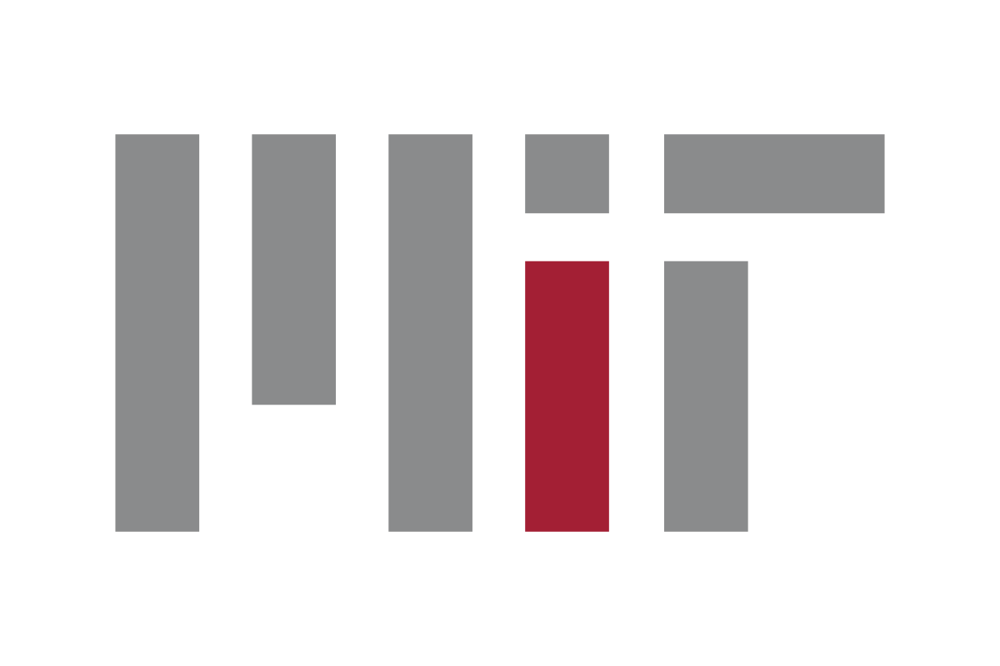
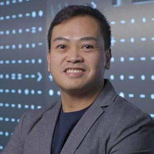

Reflect
Look closely at what the current healthcare system rewards, and whom it serves.

CriticalDataReimagining Healthcare Innovation
A one-day gathering for the people closest to the consequences of healthcare AI, and the ones best placed to shape it.
It is decided by whoever collects the data and whoever is in the room when the tool is designed. The AI as a Catalyst events start from that observation.
Each one brings together people who rarely share a table (nurses, community college students, patient advocates, engineers, clinicians, veterans) and asks them to work on a problem that matters locally, whether that is nursing practice in Boston or human flourishing grounded in Buddhist practice in Thimphu.
AI is the occasion for the gathering more than its subject. Its arrival has made long-standing problems in healthcare and education hard to ignore, and that gives communities an opening to question how their institutions work and whom they serve.
10:00 to 16:15, Paris time.
Exact location to be announced.
Nurses, students, patient advocates, engineers, clinicians, veterans. No coding required.
Held in cities as different as Manaus and Benguerir, and in settings like community colleges and nursing homes.
Look closely at what the current healthcare system rewards, and whom it serves.
Work out with people from other professions what that system could look like instead.
Leave reinvigorated, with new collaborators and a project you own.
All times are Paris time (CET). The exact room at Université Paris Santé will be announced here and sent to registered participants.
Université Paris Santé · Paris
The morning panel and LLM-athon look at where language models break on cases from participants' own settings. The afternoon panel and HASTC workshop ask what should count as evidence that a health AI is safe, and which guardrails a hospital or community can put in place now.
A hands-on workshop in which mixed teams of clinicians, students, patients and technologists test large language models on healthcare scenarios drawn from their own setting and language. No coding is required. Teams probe a model with local cases, then try to make it fail, and they record each failure with respect to what triggered it, who would be harmed and how severe the harm would be.
The cards from every session are kept as a shared, community-owned record of where these models break, which industry benchmarks rarely capture.
Health AI Systems Thinking for Community starts from the premise that oversight of health AI belongs to everyone it affects, including people outside regulatory agencies and research labs. Small groups discuss a recent publication or news article to identify what could go wrong once the tool is deployed: unintended consequences, algorithmic bias, privacy risks, and effects on patients who were absent from the training data.
Each group then proposes guardrails that a hospital, a community or a professional body could put in place without waiting for government regulation, since the technology changes faster than regulators can follow.

MIT Critical Data · Harvard Medical School
More faculty and mentors will be announced in the coming days.
Registration runs through a short online form. The exact room at Université Paris Santé will be shared with registered participants and posted on this page.